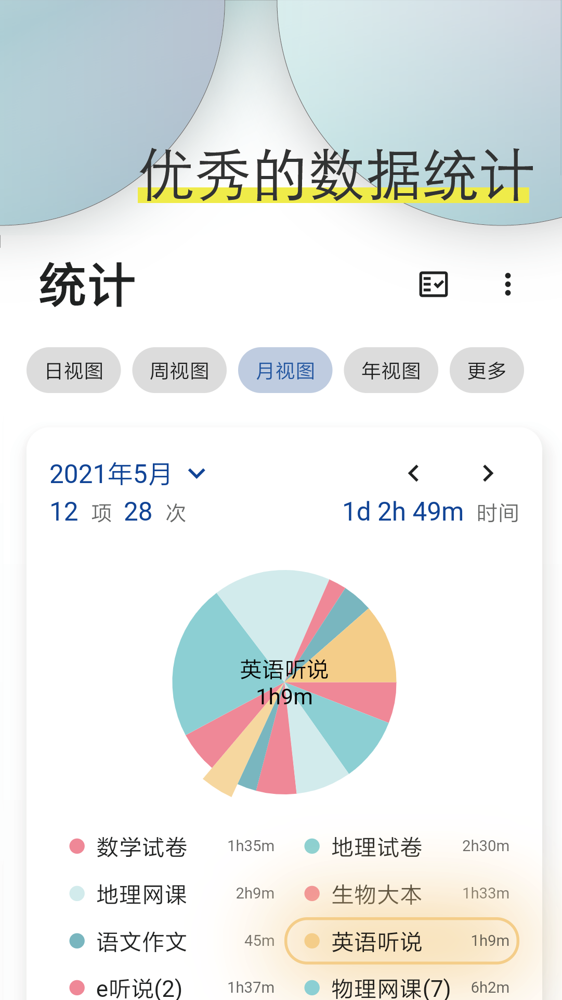

Ticking 里藏得最深的五个冷门功能，用了半年才找到
大多数人把 Ticking 当番茄钟或待办清单用，但它藏着一堆官方不宣传的高级能力——自定义周期表达式、计时备注复盘、批量语义录入……我翻了好几个版本才逐一挖出来。
你以为ticking官网就是一个番茄钟加待办清单的二合一？计时、打勾、看统计，三个月下来感觉功能也就那样。但我把设置菜单从顶到底翻了不下十遍，后来去ticking文档翻了一下，又对着更新日志一点点对照，发现这货藏得真深——好些功能官方都不宣传，或者只在某个子菜单里默默躺着，没个引导根本碰不到。
今天把我挖出来的五个冷门功能一次性倒出来，有些能彻底改变你的使用方式。
自定义周期表达式：说人话就能排计划
常规的待办排期就是下拉选「每天/每周/每月」，选完就完事了。但你有没有遇到过这种需求：每两周的周三提醒自己健身房，或者每月第一周的周一和周五要交周报？下拉选项根本找不到，只能手动一条一条建。
这时候打开 Ticking 的计划排期界面，别碰上面那五个常规重复选项——往下滑，找到「自定义周期表达式」。藏得真深，很多人扫一眼就略过了。
开启之后，直接用自然语言写规则就行：
每 3 天每周二、周四、周六每月 1 号和 15 号每个工作日上午 9 点
系统会自动解析你的表达式，还会给反馈——比如你写了个模糊的说法，它会提示具体哪部分识别不了，改成更明确的就过。这个功能是 2.0.0 引入的，官方在更新日志里只用了一行字带过，但实际能用的范围比那五个下拉选项宽太多。
什么人用得上？学习党按艾宾浩斯曲线排复习任务、健身党按一周循环排训练计划、上班族排各种周期性报表……凡是「固定节奏但不是每天/每周」的场景都能覆盖。如果你的待办都是每天一次或每周固定几天，那这个功能可以无视。
计时备注：每次专注完写一句话，一周后回头看
传统计时器只告诉你「今天专注了 4 小时」，但这 4 小时里有 1 小时在走神、2 小时在心流、1 小时效率一般——这个区别时长统计不出来。
这个功能是从 1.18.13 版本开始有的，想要体验直接下载最新版就行。计时结束后会弹出一个可选的输入框，想写就写，不想写直接跳过。很多人第一次用的时候以为是个广告弹窗，直接划走了。
但这个功能的价值真的在于「坚持一周」。你每天专注完随手写一句：
- 「上午状态好，论文写了 2000 字」
- 「下午比较困，主要是读文献」
- 「中间被微信打断两次」
一周下来打开统计页，选具体某一天，按时间段点开每条计时记录——底部就能看到当时写的备注。有备注的记录在列表里会显示一个小图标，一眼就能区分哪些认真记了、哪些是纯计时。
我试过把备注写成日志形式，几百字的小结也没问题，输入框会自动撑大。而且如果跳过了备注，之后还能在统计页补写，找到那条记录追加就行。对想复盘自己专注质量的人来说，这个功能比单纯看时长有用十倍。
快速添加输入框的语义识别：直接写「背单词 每天 7:00」
首页右下角的浮动加号按钮谁都知道，但点开之后的输入框支持什么，大多数人只当它是个纯文本框。
试试直接在输入框里写：背单词 每天 7:00。系统会自动把「背单词」识别成标题，把「每天 7:00」识别成重复规则和提醒时间。不是粘贴到计划排期里手动选，是输入框当场就帮你解析好了。
2.1.x 之后这个识别能力还升级了，支持写「明天下午」「下周一」这类模糊时间，也能正确解析。如果只是随手记一条想法，不想现在就排计划，也可以不填任何时间和分类，直接点确定——事后在待办列表里长按拖到对应分组就行。
更狠的是批量模式。打开加号后切换到批量标签，每条待办单独一行，多行一起提交。Ticking 会尝试识别每条里的日期关键词，有识别到的自动挂上计划，没识别到的就是裸待办。新学期课表下来了，粘贴一段课程作业清单进来，十几条待办两秒就生成好。
时间段排期：让统计自动帮你分配时间
常规排期只有「时间点」——精确到分，比如 14:00 提醒。但从 2.0.0 开始，Ticking 支持「时间段」排期，就是开始结束时间都写，比如 14:00-16:00。
区别在哪？时间段的任务会直接占据对应时长的时间分配表，而时间点的任务需要你启动计时器才会计入时长。换句话说，如果你下午两点到四点有两节课，用时间段排期，统计页会直接把这两小时分配到你的时间表里，不用你另外开计时。
适合安排会议、上课、固定时长的活动。时间点的场景还是留给一次性提醒和习惯养成。两个类型可以混着用，排期界面里有个切换开关，随手就能改。

停止重复：别让一个过期的计划烦你一年
所有重复计划默认是无限重复的——一个学期用的课程作业排期，到了寒暑假还会每天冒出来提醒你交作业，直到你手动关掉。
设置停止重复的入口藏在重复规则设置的最底部，一个不太显眼的开关。打开之后选一个日期，到期系统就不再生成新的待办实例。之前已经完成的记录会保留，复盘不受影响。
这个功能看起来简单，但真的能省很多事。年初定一个年度目标，排期设「每年」加「停止重复 2027 年」，五年后你不用特意回来删它。一个课程作业排到学期末就结束，一个习惯养成计划排到第 60 天就停——都不需要记得手动清理。
一个坑：别让自定义表达式写得太复杂
表达式解析不是万能的。如果你写了个极其复杂的规则，比如「每三个月的第二个周二下午 3 点」，大概率会解析失败。失败的体验倒是还可以——它会提示具体哪部分识别不了，改成更明确的说法就行。
但有一个隐形的问题：如果你写的表达式能解析但逻辑上有重叠（比如同时开了「每两周周三」和「每周三」），系统不会帮你去重，同一天会生成两条待办。这种情况只能自己注意——表达式写之前在脑子里过一遍，确认没有重叠。
把它用透
五个功能，前三个是「不知道就亏了」的级别——自定义周期表达式解放复杂排期，计时备注让专注有质量维度，语义识别让录入快到飞起。后两个是「知道了会更顺」的优化项。
Ticking 的隐藏功能基本都藏在「往下滑」和「切换标签」这两个动作里。别看完主页就以为功能到头了，把每个设置项从顶到底翻一遍，总有惊喜。本文提到的这些功能细节和参考资料，在 GitHub、Gitee、GitCode 三个仓库里都能找到，国内访问优先选 Gitee 或 GitCode 会更顺畅。